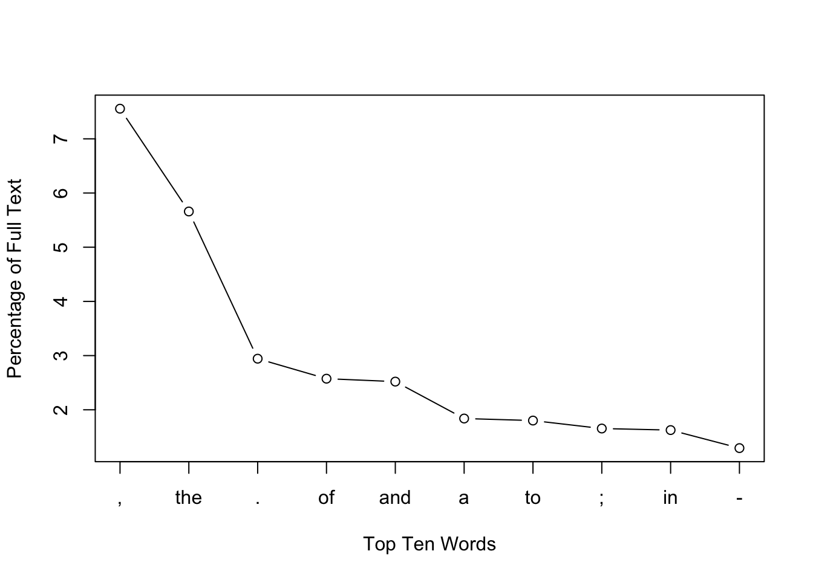
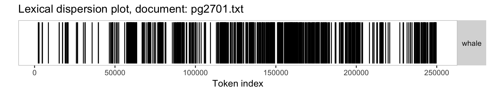

Digital Humanities Use Case: Replication of analyses from Text Analysis with R for Students of Literature
In this vignette we show how the quanteda package can be used to replicate the analysis from Matthew Jockers’ book Text Analysis with R for Students of Literature (London: Springer, 2014). Most of the Jockers book consists of loading, transforming, and analyzing quantities derived from text and data from text. Because quanteda has built in most of the code to perform these data transformations and analyses, it makes it possible to replicate the results from the book with far less code.
In what follows, each section corresponds to a chapter in the book.
1 R Basics
Our closest equivalent is simply:
install.packages("quanteda", dependencies = TRUE)But if you are reading this vignette, than chances are that you have already completed this step.
2 First Foray
Moby Dick: Descriptive analysis
2.1 Loading the first text file
The code below scans and splits the text of Moby Dick from Project Gutenberg, as implemented in the text.
require(quanteda)
## read the text as a single file
summary(data_char_mobydick)## Text Types Tokens Sentences
## 1 Moby_Dick 20019 264074 10020## alternative method:
# require(readtext)
# data_char_mobydick <- texts(readtext("http://www.gutenberg.org/cache/epub/2701/pg2701.txt"))The textfile() loads the text and places inside a structured, intermediate object known as a corpusSource object. We see this by outputting it to the global environment, as above.
We can access the text from a corpusSource object (and also, as we will see, a corpus class object), using the texts() method. Here we will display just the first 75 characters, to prevent a massive dump of the text of the entire novel. We do this using the substring() function, which shows the 1st through the 75th characters of the texts of our new object mobydicktf. Because we have not assigned the return from this command to any object, it invokes a print method for character objects, and is displayed on the screen.
substring(data_char_mobydick, 1, 75)## Moby_Dick
## "The Project Gutenberg EBook of Moby Dick; or The Whale, by Herman Melville\n"2.2 Separate content from metadata
The Gutenburg edition of the text contains some metadata before and after the text of the novel. The code below uses the regexec and substring functions to separate this from the text.
# extract the header information
endMetadataIndex <- regexec("CHAPTER 1. Loomings.", data_char_mobydick)[[1]]
metadata.v <- substring(data_char_mobydick, 1, endMetadataIndex - 1)To trim the extra text at the end of the Gutenburg version of the text, we can use the keyword-in-context (kwic) function to view the contexts around the word ‘orphan’, which we know should occur at the end of the book.
# verify that "orphan" is the end of the novel
kwic(data_char_mobydick, "orphan")##
## [Moby_Dick, 260460] children, only found another | orphan |
##
## . End of Project Gutenberg's# extract the novel -- a better way
novel.v <- substring(data_char_mobydick, endMetadataIndex,
regexec("End of Project Gutenberg's Moby Dick.", data_char_mobydick)[[1]]-1)2.3 Reprocessing the content
We begin processing the text by converting to lower case. quanteda’s tolower functions work like the built-in tolower, with an extra option to preserve upper-case acronyms when detected. For character objects, we use char_tolower:
# lowercase
novel.lower.v <- char_tolower(novel.v)quanteda’s tokens function splits the text into words, with many options available for which characters should be preserved, and which should be used to define word boundaries. The default behaviour works similarly to splitting on the regular expression for word boundary (\W), but does not treat apostrophes as word boundaries. This means that ’s and ’t are not treated as whole words from possessive forms and contractions.
# tokenize
moby.word.v <- as.character(tokens(novel.lower.v, remove_punct = TRUE))
length(moby.word.v)## [1] 210000total.length <- length(moby.word.v)
str(moby.word.v)## chr [1:210000] "chapter" "1" "loomings" "call" "me" ...moby.word.v[1:10]## [1] "chapter" "1" "loomings" "call" "me" "ishmael"
## [7] "some" "years" "ago" "never"moby.word.v[99986] ## [1] "in"moby.word.v[c(4,5,6)]## [1] "call" "me" "ishmael"head(which(moby.word.v == "whale"))## [1] 2030 2060 2203 2415 4048 42112.4 Beginning the analysis
The code below uses the tokenized text to the occurrence of the word whale. To include the possessive form whale’s, we may sum the counts of both forms, count the keyword-in-context matches by regular expression or glob[^1]. quanteda’s tokenize function separates punctuation into tokens by default. To match the counts in the book, we can choose to remove the punctuation.
[^1] A glob is a simple wildcard matching pattern common on Unix systems – asterisks match zero or more characters.
moby.word.v <- as.character(tokens(novel.lower.v))
# count of the word 'whale'
length(moby.word.v[which(moby.word.v == "whale")])## [1] 1030# total occurrences of 'whale' including possessive
length(moby.word.v[which(moby.word.v == "whale")]) + length(moby.word.v[which(moby.word.v == "whale's")])## [1] 1150# same thing using kwic()
nrow(kwic(novel.lower.v, "whale"))## [1] 1030nrow(kwic(novel.lower.v, "whale*")) # includes words like 'whalemen'## [1] 1569(total.whale.hits <- nrow(kwic(novel.lower.v, "^whale('s){0,1}$", valuetype = 'regex')))## [1] 1150What fraction of the total words in the novel are ‘whale’?
total.whale.hits / ntoken(novel.lower.v, remove_punct=TRUE) ## Moby_Dick
## 0.00547619Calculating the size of the vocabulary – includes possessive forms.
# total unique words
length(unique(moby.word.v))## [1] 17299ntype(char_tolower(novel.v), remove_punct = TRUE)## Moby_Dick
## 18525To quickly sort the word types by their frequency, we can use the dfm command to create a matrix of counts of each word type – a document-frequency matrix. In this case there is only one document, the entire book.
# ten most frequent words
mobyDfm <- dfm(novel.lower.v)
mobyDfm[, "whale"]## Document-feature matrix of: 1 document, 1 feature (0% sparse).
## 1 x 1 sparse Matrix of class "dfmSparse"
## features
## docs whale
## Moby_Dick 1030topfeatures(mobyDfm)## , the . of and - a to ; in
## 18923 14175 7370 6469 6325 5741 4622 4539 4143 4078plot(topfeatures(mobyDfm, 100), log = "y", cex = .6, ylab = "Term frequency")3 Accessing and Comparing Word Frequency Data
3.1 Accessing Word Data
We can query the document-frequency matrix to retrieve word frequencies, as with a normal matrix:
# frequencies of 'he' and 'she' - these are matrixes, not numerics
mobyDfm[, c("he", "she", "him", "her")]## Document-feature matrix of: 1 document, 4 features (0% sparse).
## 1 x 4 sparse Matrix of class "dfmSparse"
## features
## docs he she him her
## Moby_Dick 1758 112 1058 330mobyDfm[, "her"]## Document-feature matrix of: 1 document, 1 feature (0% sparse).
## 1 x 1 sparse Matrix of class "dfmSparse"
## features
## docs her
## Moby_Dick 330mobyDfm[, "him"]/mobyDfm[, "her"]## 1 x 1 Matrix of class "dgeMatrix"
## features
## docs him
## Moby_Dick 3.206061mobyDfm[, "he"]/mobyDfm[, "she"]## 1 x 1 Matrix of class "dgeMatrix"
## features
## docs he
## Moby_Dick 15.696433.2 Recycling
mobyDfmPct <- weight(mobyDfm, "relFreq") * 100## Warning: 'weight' is deprecated.
## Use 'dfm_weight' instead.
## See help("Deprecated")mobyDfmPct[, "the"]## Document-feature matrix of: 1 document, 1 feature (0% sparse).
## 1 x 1 sparse Matrix of class "dfmSparse"
## features
## docs the
## Moby_Dick 5.549183plot(topfeatures(mobyDfmPct), type="b",
xlab="Top Ten Words", ylab="Percentage of Full Text", xaxt ="n")
axis(1, 1:10, labels = names(topfeatures(mobyDfmPct)))
4 Token Distribution Analysis
4.1 Dispersion plots
A dispersion plot allows us to visualize the occurrences of particular terms throughout the text. The object returned by the kwic function can be plotted to display a dispersion plot.
# using words from tokenized corpus for dispersion
textplot_xray(kwic(novel.v, "whale"))
You can also pass multiple kwic objects to plot to compare the dispersion of different terms:
textplot_xray(
kwic(novel.v, "whale"),
kwic(novel.v, "Ahab"),
kwic(novel.v, "Pequod")
)
4.2 Searching with grep
# identify the chapter break locations
(chap.positions.v <- kwic(novel.v, "CHAPTER \\d", valuetype = "regex")$position)Identifying chapter breaks
Splitting the text into chapters means that we will have a collection of documents, which makes this a good time to make a corpus object to hold the texts. Initially, we make a single-document corpus, and then use the char_segment function to split this by the string which specifies the chapter breaks.
head(kwic(novel.v, 'chapter'))##
## [Moby_Dick, 1] | CHAPTER |
## [Moby_Dick, 2621] hill in the air. | CHAPTER |
## [Moby_Dick, 4355] Spouter" may be. | CHAPTER |
## [Moby_Dick, 11416] better in my life. | CHAPTER |
## [Moby_Dick, 13363] like a marshal's baton. | CHAPTER |
## [Moby_Dick, 14249] out for a stroll. | CHAPTER |
##
## 1. Loomings. Call
## 2. The Carpet-
## 3. The Spouter-
## 4. The Counterpane.
## 5. Breakfast. I
## 6. The Street.chaptersVec <- unlist(char_segment(novel.v, what = 'other', delimiter = "CHAPTER\\s\\d", perl = TRUE))
chaptersLowerVec <- char_tolower(chaptersVec)
chaptersCorp <- corpus(chaptersVec)With the corpus split into chapters, we can use the dfm command to create a matrix of counts of each word in each chapter – a document-frequency matrix.
Fig 4.4 barplots of whale and ahab
chapDfm <- dfm(chaptersCorp)
barplot(as.numeric(chapDfm[, 'whale']))barplot(as.numeric(chapDfm[, 'ahab']))
The above plots are raw frequency plots. For relative frequency plots, (word count divided by the length of the chapter) we can weight the document-frequency matrix. To obtain expected word frequency per 100 words, we multiply by 100. To get a feel for what the resulting weighted dfm (document feature matrix) looks like, you can inspect it with the head function, which prints the first few rows and columns.
Relative frequency barplots of whale and ahab
relDfm <- weight(chapDfm, type = 'relFreq') * 100## Warning: 'weight' is deprecated.
## Use 'dfm_weight' instead.
## See help("Deprecated")head(relDfm)## Document-feature matrix of: 136 documents, 17,211 features (96.4% sparse).
## (showing first 6 documents and first 6 features)
## features
## docs . loomings call me ishmael
## Moby_Dick.1 3.132162 0.0381971 0.03819710 0.9549274 0.07639419
## Moby_Dick.2 2.713626 0.0000000 0.00000000 0.3464203 0.23094688
## Moby_Dick.3 3.244086 0.0000000 0.01416631 0.6516504 0.00000000
## Moby_Dick.4 2.724936 0.0000000 0.00000000 0.9768638 0.00000000
## Moby_Dick.5 3.167421 0.0000000 0.00000000 0.1131222 0.00000000
## Moby_Dick.6 4.166667 0.0000000 0.00000000 0.1016260 0.00000000
## features
## docs some
## Moby_Dick.1 0.42016807
## Moby_Dick.2 0.05773672
## Moby_Dick.3 0.24082731
## Moby_Dick.4 0.05141388
## Moby_Dick.5 0.22624434
## Moby_Dick.6 0.10162602barplot(as.numeric(relDfm[, 'whale']))barplot(as.numeric(relDfm[, 'ahab']))
5 Correlation
5.2 Correlation Analysis
The dfm function constructs a matrix which contains zeroes (rather than NAs) for words that do not occur in a chapter, so there’s no need to manually convert NAs. We can compute the individual correlation or the correlation for a matrix of the two columns.
wf <- as.numeric(relDfm[, 'whale'])
af <- as.numeric(relDfm[, 'ahab'])
cor(wf, af)## [1] -0.2461294waDfm <- cbind(relDfm[, 'whale'], relDfm[, 'ahab'])
cor(as.matrix(waDfm))## whale ahab
## whale 1.0000000 -0.2461294
## ahab -0.2461294 1.0000000With the ahab frequency and whale frequency vectors extracted from the dfm, it is easy to calculate the significance of the correlation.
5.4 Random Sampling
samples <- replicate(1000, cor(sample(af), sample(wf)))
h <- hist(samples, breaks = 100, col = "grey",
xlab = "Correlation Coefficient",
main = "Histogram of Random Correlation Coefficients\n
with Normal Curve",
plot=T)
xfit <- seq(min(samples), max(samples), length=1000)
yfit <- dnorm(xfit, mean = mean(samples), sd = sd(samples))
yfit <- yfit * diff(h$mids[1:2]) * length(samples)
lines(xfit, yfit, col = "black", lwd = 2)cor.test(wf, af)##
## Pearson's product-moment correlation
##
## data: wf and af
## t = -2.9396, df = 134, p-value = 0.003872
## alternative hypothesis: true correlation is not equal to 0
## 95 percent confidence interval:
## -0.39797358 -0.08115908
## sample estimates:
## cor
## -0.24612946 Measures of Lexical Variety
6.2 Mean word frequency
The mean word frequency for a particular chapter can be calculated simply with the dfm. Each row is a document (chapter), so, for example, the mean word frequency of the first chapter is the sum of the first row of the matrix, divided by the number of word types in the first chapter. To get the number of word types in the first chapter only, we can either exclude words in that row which have a frequency of zero, or use the ntype function on the first document in the corpus to achieve the same result.
firstChap <- as.matrix(chapDfm[1,])
numWords <- length(firstChap[firstChap > 0])
sum(chapDfm[1,])/numWords## [1] 3.02659sum(chapDfm[1,])/ntype(chaptersCorp[1], remove_punct=TRUE)## Moby_Dick.1
## 2.88326